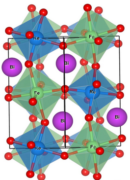

Research
Our research focuses on understanding the properties of materials from an electronic structure perspective. The insights thus developed enable us to rationalize experimental observations as well as predict new materials and new functionalities. The research activities in our group currently span four broad themes.
Bulk and interfacial magnetism & ferroelectricity
 Transition metal double perovskites (DPs) having general formula A2BB’O6 have emerged as a wonderful playground for encoding new physics. Varying the cations sitting at the B-site/A-site, one can tune the electronic, structural and magnetic properties of DPs leading to interesting phenomena such as ferroelectricity, magnetism, multiferroicity, half-metallicity, metal-insulator transition, etc. We are particularly interested in the ab initio design of novel multiferroics, where magnetism and ferroelectricity can co-exist and talk to each other. Thin films offer epitaxial strain as another handle to tune the Hamiltonian of the DPs and achieve the aforementioned phenomena in the same system. Epitaxial strain on DP thin films can drastically change the properties of the material as compared to its bulk form. For instance, we found that epitaxially strained Bi2FeCrO6 (BFCO) thin film shows a C-type antiferromagnetic (C-AFM) order which is in contrast to the G-AFM state obtained in the bulk (Phys. Rev. B 93, 104415 (2016)). The effect of strain at the interface of two DP also leads to interesting properties such as structural phase transition, polar to non-polar,metal to insulator transition etc. We have also shown that coupling the epitaxial strain with A-site doping in Bi2FeCrO6 a rich phase diagram is obtained including an unusual half-metallic multiferroic phase. (Phys. Rev. Lett. 123, 107201 (2019)).
Read More: Deepti RajpootMaterials for Energy Harvesting
 Sunlight is a clean and abundant source of energy. The direct conversion of solar energy
into electricity is achieved through photovoltaic (PV) cells. An efficient photovoltaic
conversion requires not only the best absorbers but also optimisation of the interfaces
at which charge splitting and injection occur. Our group is interested in understanding
the interfacial processes occurring in a PV cell, particularly those immediately following
light absorption. Another way to harvest solar energy is to use it to split water into
oxygen and hydrogen in a photo-electrochemical cell (PEC). Of the two half-cell reactions
involved in this process, the oxygen evolution reaction (OER) currently poses a practical
challenge due to its relatively sluggish kinetics. Designing efficient and inexpensive
catalysts (for e.g. those based on earth-abundant elements) for this purpose requires a
detailed understanding of the interactions between the intermediates and the catalyst surfaces,
mechanisms of the reactions involved and the energetics of the intermediates that contribute
to the potential determining step. We are currently employing ground and excited state
density-functional theory based tools to model interfacial processes in photovoltaic materials,
assess the OER catalytic activity of oxides of earth-abundant elements (e.g. Fe, Ni, etc.),
studying the charge generation process as well as the ensuing carrier dynamics across
semiconductor/catalyst interfaces in PEC. Another area of interest in this theme is methane
conversion. Methane is a clean fuel and a potentially wonderful source for aromatics and higher
hydrocarbons. However, the activation of the C-H bond in methane is quite challenging not only
because of the energetics involved but also because the currently available catalysts are based
on expensive metals preventing large-scale implementation. We are currently investigating
feasibility and mechanism of direct non-oxidative methane conversion on earth-abundant materials
with the help of DFT-based tools and techniques. We are also interested in the electronic
properties of organic-inorganic hybrid pervoskites which have tremendous potential as materials
to harvest solar energy.
Sunlight is a clean and abundant source of energy. The direct conversion of solar energy
into electricity is achieved through photovoltaic (PV) cells. An efficient photovoltaic
conversion requires not only the best absorbers but also optimisation of the interfaces
at which charge splitting and injection occur. Our group is interested in understanding
the interfacial processes occurring in a PV cell, particularly those immediately following
light absorption. Another way to harvest solar energy is to use it to split water into
oxygen and hydrogen in a photo-electrochemical cell (PEC). Of the two half-cell reactions
involved in this process, the oxygen evolution reaction (OER) currently poses a practical
challenge due to its relatively sluggish kinetics. Designing efficient and inexpensive
catalysts (for e.g. those based on earth-abundant elements) for this purpose requires a
detailed understanding of the interactions between the intermediates and the catalyst surfaces,
mechanisms of the reactions involved and the energetics of the intermediates that contribute
to the potential determining step. We are currently employing ground and excited state
density-functional theory based tools to model interfacial processes in photovoltaic materials,
assess the OER catalytic activity of oxides of earth-abundant elements (e.g. Fe, Ni, etc.),
studying the charge generation process as well as the ensuing carrier dynamics across
semiconductor/catalyst interfaces in PEC. Another area of interest in this theme is methane
conversion. Methane is a clean fuel and a potentially wonderful source for aromatics and higher
hydrocarbons. However, the activation of the C-H bond in methane is quite challenging not only
because of the energetics involved but also because the currently available catalysts are based
on expensive metals preventing large-scale implementation. We are currently investigating
feasibility and mechanism of direct non-oxidative methane conversion on earth-abundant materials
with the help of DFT-based tools and techniques. We are also interested in the electronic
properties of organic-inorganic hybrid pervoskites which have tremendous potential as materials
to harvest solar energy.
Pressure and Temperature induced phenomena
 Understanding the thermal behaviour of materials is crucial to designing practical applications.
The chemical bonding in materials can also be altered at high pressure to induce heavily distorted
bonding environments, non-standard hybridizations of atoms, new oxidation states and spin states,
novel electronic ground-states, etc. The temperature and pressure responses of hydrogen bonded
systems are particularly interesting given their wide occurrence in materials. Currently we are
working on some interesting temperature and pressure induced phenomena in hydrogen bonded systems.
Understanding the thermal behaviour of materials is crucial to designing practical applications.
The chemical bonding in materials can also be altered at high pressure to induce heavily distorted
bonding environments, non-standard hybridizations of atoms, new oxidation states and spin states,
novel electronic ground-states, etc. The temperature and pressure responses of hydrogen bonded
systems are particularly interesting given their wide occurrence in materials. Currently we are
working on some interesting temperature and pressure induced phenomena in hydrogen bonded systems.
Some of these are: polymerization of solid acrylamide under high pressure where the dynamic response
of the hydrogen bonding plays key role in guiding the system towards different polymeric structures;
temperature and pressure induced structural phase transitions in organic inorganic hybrid perovskites
(RPbX3, R= organic cation, X=halide); and negative linear compressibility (NLC) and negative thermal
expansion (NTE) in hydrogen bonded systems.
Photo-induced phenomena
 Photo induced phenomena play an important role in various domains such as
chemistry, condensed matter physics and biology. Photophysics and photochemistry
address the interaction of such systems with light. Major developments in TDDFT
have now made it possible to investigate the early events following light
excitation in molecules and extended systems. Modelling excited state dynamics
is key to developing mechanistic insights into photochemical processes. We are
currently investigating photo-induced phenomena in both low dimensional materials,
confined chromophores and biological systems by employing a judicious combination
linear response and real time TDDFT techniques. Some problems of current focus
include optical properties of transition metal dichalcogenides (TMDs) nanoflakes
and their heterostructures; mechanism of photo-induced repair of damaged DNA;
photophysics of confined chromophores; and photo-induced electron transfer in
molecules and semiconductor interfaces.
Photo induced phenomena play an important role in various domains such as
chemistry, condensed matter physics and biology. Photophysics and photochemistry
address the interaction of such systems with light. Major developments in TDDFT
have now made it possible to investigate the early events following light
excitation in molecules and extended systems. Modelling excited state dynamics
is key to developing mechanistic insights into photochemical processes. We are
currently investigating photo-induced phenomena in both low dimensional materials,
confined chromophores and biological systems by employing a judicious combination
linear response and real time TDDFT techniques. Some problems of current focus
include optical properties of transition metal dichalcogenides (TMDs) nanoflakes
and their heterostructures; mechanism of photo-induced repair of damaged DNA;
photophysics of confined chromophores; and photo-induced electron transfer in
molecules and semiconductor interfaces.